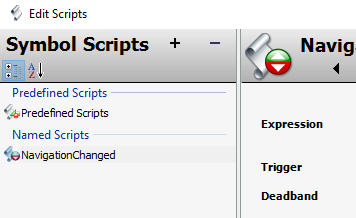
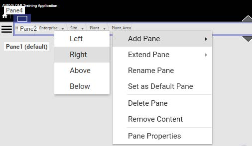

Page 693
Module 13 — Scripting in Graphics | Pages 693-704
Page 13-9, Lab 25 – Creating a Back Button for Navigation.
• Introduction: Create button symbol with custom properties to track current/previous navigation item, use in scripts/animations, add to Main layout, test in preview
• UI Screenshot (grayscale):
• Top bar: Cloud\Student, minimize/maximize/close
• Middle bar: Standard_Style, timestamp 11/3/2022 3:11 PM
• Bottom bar: "Nav Back" button (to be created), Real-time Mode button
• Objectives:
• Create a named script in a symbol
• Use the Action Scripts animation
• Footer: AVEVA™ Operations Management Interface 2023]
Lab 25 – Creating a Back Button for Navigation
Lab 25 – Creating a Back Button for
Navigation
Introduction
In this lab, you will create a symbol for a button and configure it with custom properties to track the
current navigation item and the previous navigation item of a ViewApp in runtime. When
configuring the button symbol, you will use the custom properties in scripts and animations for the
symbol.
You will add the symbol to a new pane in the Main layout, to the right of Pane2, which is the pane
with the NavBreadcrumbControl.
Then you will test the behavior of the button in a preview session, to see how it navigates back to
the previous navigation item.
Objectives
Upon completion of this lab, you will be able to:
Create a named script in a symbol
Use the Action Scripts animation

Page 13-10, Module 13 – Scripting in Graphics.
• Section Title: "Create and Configure a Button Symbol"
• Steps 1-4: Create BackButton symbol in Training\Symbols, open in Graphic Editor, right-click > Custom Properties
• Custom Properties Table:
• CurrentItem: String, (blank), Private
• PreviousItem: String, (blank), Private
• Step 5: Click OK to close
• Screenshot - Edit Custom Properties Dialog:
• Title: Edit Custom Properties - English (United States)
• Left Panel: Properties list - CurrentItem, PreviousItem (both with checkmarks)
• Right Panel:
• Header: PreviousItem (selected), BackButton dropdown, 1 of 2 navigation
• Data Type: String (dropdown)
• Default Value: (empty text field)
• Visibility: Private (radio button selected)
• Description: (empty)
• Status: "The property has a constant String value of ''."
• Bottom: OK (blue), Cancel (gray)
• Footer: AVEVA™ Training]
Create and Configure a Button Symbol
In the following steps, you will create a button symbol and configure it with custom properties,
scripts, and animations.
1.
On the Graphics tab, in the Training \ Symbols toolset, create a symbol and name it
BackButton.
2.
Double-click BackButton to open it in the Graphic Editor.
3.
Right-click the drawing canvas and select Custom Properties.
The Custom Properties dialog box appears.
4.
Create the following custom properties:
5.
Click OK to close the Edit Custom Properties dialog box.
Name
Data Type
Default Value
Visibility
CurrentItem
String
(Leave blank)
Private
PreviousItem
String
(Leave blank)
Private


Page 13-11, Lab 25 – Creating a Back Button for Navigation.
• Step 6: Right-click canvas > Scripts, Edit Scripts dialog appears
• Screenshot 1 - Edit Scripts (initial):
• Left: Symbol Scripts tree - Predefined Scripts (expanded)
• Right: Predefined Scripts config - Trigger: On Show, Data Timeout: 1000 ms, scripts used: 0
• Bottom: OK, Cancel buttons, Line: 1 Col: 1
• Step 7: Click Add button, name script NavigationChanged
• Screenshot 2 - Edit Scripts (after adding):
• Red arrow highlighting + Add button
• Left: Predefined Scripts + Named Scripts > NavigationChanged
• Right: NavigationChanged configuration fields: Expression, Trigger, Deadband
• Footer: AVEVA™ Operations Management Interface 2023]
Lab 25 – Creating a Back Button for Navigation
6.
Right-click the canvas and select Scripts.
The Edit Scripts dialog box appears.
7.
Click the Add button to add a named script, and name it NavigationChanged.

Page 13-12, Module 13 – Scripting in Graphics.
• Step 8: Enter MyViewApp.Navigation.Current in Expression field
• Step 9: Set Trigger to DataChange
• Step 10: Enter script code (pre-made text file available at C:\Training)
• Script Code:
'Script body begins...
'Record the previous item.
PreviousItem = CurrentItem;
'Get the latest current navigation item.
CurrentItem = MyViewApp.Navigation.Current;
'Script body ends.
• Screenshot - Edit Scripts Dialog:
• Left: Symbol Scripts - Predefined Scripts, Named Scripts > NavigationChanged (2 of 2)
• Expression: MyViewApp.Navigation.Current
• Trigger: DataChange, Quality changes checkbox unchecked, Period: 1000ms (inactive)
• Deadband: 0
• Script Editor: Code with line numbers 1-7, syntax highlighting (green comments, blue variables)
• Status bar: Line: 7 Col: 1
• Editor toolbar: font size, find/replace, indentation, help icons
• Bottom: OK, Cancel
• Footer: AVEVA™ Training]
8.
In the Expression field, enter the following:
MyViewApp.Navigation.Current
9.
For Trigger, select DataChange.
10. For the script body, enter the following script:


Page 13-13, Lab 25 – Creating a Back Button for Navigation.
• Steps 11-17: Creating ResetNavBackButton script, adding button to canvas
• Step 11: Create named script ResetNavBackButton
• Step 12: Expression: MyViewApp.Navigation.Current == PreviousItem
• Step 13: Trigger: OnTrue
• Step 14: Script:
PreviousItem = "";
• Step 15: Click OK
• Step 16: Add Button tool, text "Nav Back"
• Step 17: Set Element Style to Navigation
• Screenshot 1 - Edit Scripts Dialog:
• Left: Predefined Scripts, Named Scripts > NavigationChanged, ResetNavBackButton (3 of 3)
• Right: Expression=MyViewApp.Navigation.Current == PreviousItem, Trigger=OnTrue, Deadband=0
• Script editor with code
• Screenshot 2 - Canvas & Properties:
• Canvas with "Nav Back" button selected
• Properties: Name=Button1, Element Style=Navigation, X=1280, Y=160, Width=110, Height=30
• Footer: AVEVA™ Operations Management Interface 2023]
Lab 25 – Creating a Back Button for Navigation
11. Click the Add button to add a named script, and name it ResetNavBackButton.
12. In the Expression field, enter the following:
MyViewApp.Navigation.Current == PreviousItem
13. For Trigger, select OnTrue.
14. For the script body, enter the following script:

Page 13-14, Module 13 – Scripting in Graphics.
• Steps 18-21: Configure button's Action Script
• Step 18: Double-click Button1 to open Edit Animations
• Step 19: Click Add > Action Scripts
• Step 20: Trigger: On Left/Key/Touch Up
• Step 21: Script:
'Script body begins...
MyViewApp.Navigation.Current = PreviousItem;
'Script body ends.
• Screenshot - Edit Animations Dialog:
• Left: Action Scripts (enabled, green checkmark), Interaction > Action Scripts Enabled
• Right: Key Equivalent (Ctrl, Shift checkboxes, Key=None), Trigger=On Left/Key/Touch Up
• Scripts used: 0
• Script editor: MyViewApp.Navigation.Current = PreviousItem;
• Line: 4 Col: 19
• Footer: AVEVA™ Training]
18. Double-click Button1 to open the Edit Animations dialog box.
19. Click Add and add an Action Scripts animation.
20. For Trigger type, ensure On Left/Key/Touch Up is selected.
21. For the script body, enter the following script:

Page 13-15, Lab 25 – Creating a Back Button for Navigation.
• Steps 22-23: Configure Disable animation for button
• Step 22: Click Add > Disable animation
• Step 23: Expression: PreviousItem == ""
• Screenshot - Edit Animations Dialog (Disable):
• Left: Interaction > Disable (enabled), Action Scripts (enabled)
• Right: Boolean tab selected
• Expression Or Reference: PreviousItem == ""
• Disabled When Expression Is: True, 1, On (selected)
• Target: Button1, 1 of 2
• Bottom: OK, Cancel
• Footer: AVEVA™ Operations Management Interface 2023]
Lab 25 – Creating a Back Button for Navigation
22. Click Add and add a Disable animation.
23. For the Boolean Expression or Reference, enter the following expression:
PreviousItem == ""

Page 13-16, Module 13 – Scripting in Graphics.
• Steps 24-26: Configure Element Style animation
• Step 24: Element Style animation
• Boolean expression: PreviousItem <> ""
• True/1/On: Element Style = Navigation
• False/0/Off: Element Style = Intensity2
• Step 25: Click OK
• Step 26: Save, close, check in BackButton symbol
• Screenshot - Edit Animations Dialog (Element Style):
• Left: Visualization > Element Style (enabled), Interaction > Disable, Action Scripts (enabled)
• Right: Boolean tab, 1 of 3
• Expression: PreviousItem <> ""
• True/1/On: Element Style checked, dropdown=Navigation
• False/0/Off: Element Style checked, dropdown=Intensity2
• Right preview: Shows Navigation style
• Footer: AVEVA™ Training]
24. Add an Element Style animation and configure it as follows:
25. Click OK to close the Edit Animations dialog box.
26. Save and close the BackButton symbol, and check it in.
States:
Boolean
Expression Or Reference (Boolean):
PreviousItem <> ""
Values \ True, 1, On:
Element Style checked (default)
Navigation selected
Values \ False, 0, Off:
Element Style checked (default)
Intensity2 selected



Page 13-17, Lab 25 – Creating a Back Button for Navigation.
• Steps 27-29: Modify Main layout
• Step 27: Open Main layout in Layout Editor
• Step 28: Select Pane2 (contains NavBreadcrumbControl)
• Step 29: Right-click Pane2 > Add Pane > Right
• Screenshot 1 - Layout Editor:
• Top bar: AVEVA OMI Training Application
• Pane hierarchy:
• Pane4 (top header)
• Pane2 (selected, blue): Breadcrumb navigation with Enterprise, Site, Plant, Plant Area dropdowns
• Pane1 (default): Main content area
• Screenshot 2 - Context Menu:
• Add Pane submenu: Left, Right, Above, Below
• Extend Pane, Rename Pane, Set as Default Pane, Delete Pane, Remove Content, Pane Properties
• Screenshot 3 - Result:
• Pane2 (left), Pane11 (new, right), Pane1 (bottom)
• Red arrow pointing to Pane11
• Footer: AVEVA™ Operations Management Interface 2023]
Lab 25 – Creating a Back Button for Navigation
Add the Button Symbol to the Main Layout
Now, you will add a pane to the Main layout and assign the BackButton symbol to it.
27. On the Graphics tab, in the Training \ Layouts toolset, double-click Main to open it in the
Layout Editor.
28. Select Pane2, which has the NavBreadcrumbControl assigned.
29. Right-click Pane2 and select Add Pane | Right.
A new pane named Pane11 is added to the right of Pane2.


Page 13-18, Module 13 – Scripting in Graphics.
• Step 30: Search BackButton in Toolbox, drag to Pane11
• Note: Can zoom preview for better view
• Screenshot 1 - Pane11 Preview:
• Dark window bar with controls
• Pane11: Nav Back dropdown, Page 10 button, circular arrow icon
• Step 31: Slide divider between Pane2 and Pane11 to resize Pane11
• Screenshot 2 - Resize Preview:
• Pane2: 1332 px (69%), Pane11: 365 px (19%), divider with resize cursor
• Screenshot 3 - Resized Pane11:
• Pane11 narrowed with Pane11 Back button, Page 10 button
• Step 32: Save and close Main layout, check it in
• Footer: AVEVA™ Training]
30. On the Toolbox tab, enter a search string to find the BackButton symbol and drag it to
Pane11.
Pane11 should look similar to the following.


Page 13-19, Lab 25 – Creating a Back Button for Navigation.
• Section Title: "Test the ViewApp in a Preview Session"
• Step 33: Switch to preview session
• Note: Nav Back button is grayed out (not yet navigated)
• Screenshot 1 - Disabled Nav Back Button:
• Title bar: Cloud\Student, Standard_Style, timestamp 11/3/2022 2:06 PM
• Nav Back button: grayed/disabled (not clickable)
• Real-time Mode button
• Steps 34-35: Navigate to Plant > Packaging
• Screenshot 2 - Navigation View:
• Breadcrumb: Plant (green 32, yellow 24, red 10) > Packaging (green 8, yellow 8, red 8)
• Note: Nav Back button now enabled (different location navigated)
• Screenshot 3 - Enabled Nav Back Button:
• Timestamp 11/3/2022 3:11 PM
• Nav Back button: enabled/clickable (dark gray, not grayed)
• Footer: AVEVA™ Operations Management Interface 2023]
Lab 25 – Creating a Back Button for Navigation
Test the ViewApp in a Preview Session
Now you will test your changes in the preview session.
33. Switch to the ViewApp preview session.
Notice that the Nav Back button is displayed at the top of the ViewApp, to the right of the pane
with the NavBreadcrumbControl. The Nav Back button is grayed, because you have not yet
navigated within the updated ViewApp.
In the next steps, you will navigate to a different location and see the behavior of the Nav Back
button.
34. Make a note of your current navigation. For example, you may be navigated to Plant.
35. Navigate to a different item in the navigation.
For example, navigate to Plant \ Packaging.
Notice that the Nav Back button is now enabled, because you have navigated to a different
item within the ViewApp.

Page 13-20, Module 13 – Scripting in Graphics.
• Step 36: Click Nav Back - navigates back to Plant (previous item)
• Observation: Nav Back button disabled after navigating back
• Step 37: Navigate to different items, test Nav Back
• Step 38: Minimize preview session and ViewApp Editor when finished
•
• Screenshot - Navigation View:
• Title bar: AVEVA OMI Training Application
• Hamburger menu, Home icon > Plant (current location)
• Plant status indicators: Red Diamond 32, Yellow Triangle 24, Blue Square 10
• Watermark: DO NOT COPY
• Footer: AVEVA™ Training]
36. Click Nav Back.
Notice that you have navigated back to the previous item, which in this example, is Plant.
The Nav Back button is disabled.
37. Navigate to different items in the ViewApp, and then use the Nav Back button to navigate to
the previous item.
38. When you are finished testing, minimize the preview session and the ViewApp Editor.
Review the lab steps above and list the main configuration actions you completed.
Consider the dependencies between steps and how skipping one might affect the outcome.